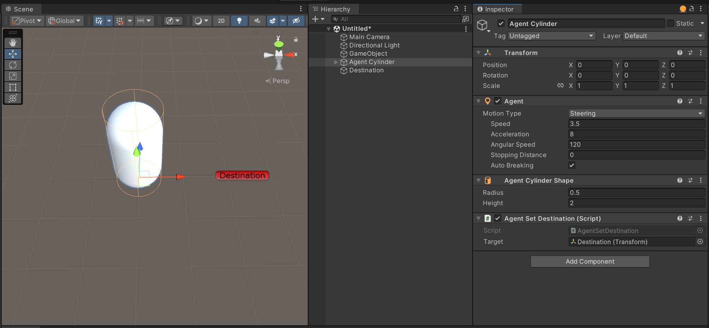
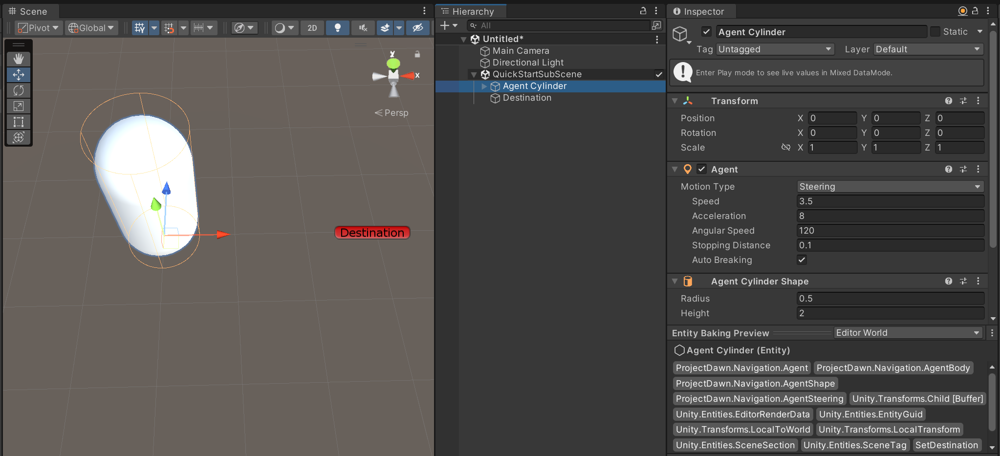

Quick Start
This package is set up to support both GameObject (using components that inherit MonoBehaviour class) and Entity (ECS package) workflows. Here is a quick start guide to get you started with each workflow.
GameObjects
Create a game object using the menu item "GameObject > AI > Agent Cylinder".
Create a new script "AgentSetDestination.cs" and attach it to the agent game object.
using UnityEngine;
using ProjectDawn.Navigation.Hybrid;
public class AgentSetDestination : MonoBehaviour
{
public Transform Target;
void Start()
{
GetComponent<AgentAuthoring>().SetDestination(Target.position);
}
}
Create another game object that will be used as a target for the script AgentSetDestination.cs, and assign it to the Target field.
Finally, click play, and the agent should start moving towards the target.

Note
This minimal setup will only include the steering behavior and will not include any avoidance.
Other Behaviors
To add additional behaviors to the agent, you can add them as components to the agent game object. For more detailed information about each behavior, check the Game Objects section.
Agent Collider: This component will enable collisions between agents.Agent Sonar Avoid: This component will enable avoidance between nearby agents using the Sonar Avoidance solution.Agent Nav Mesh: This component will enable the agent to navigate using Unity Nav Mesh.
...
Entities Sub-scene
Before jumping into this section, make sure you are familiar with Entities and Baking concepts and have Entities Graphics setup.
Assuming you have already followed the previous section on Game Objects, you can now convert your game object agent to an entity agent. To do this, create a new sub-scene and add your Agent Cylinder and Destination game objects to it.
Extend the previous script AgentSetDestination.cs with ECS component, baker, and system that will set the agent's destination using the AgentBody component.
using UnityEngine;
using ProjectDawn.Navigation.Hybrid;
using Unity.Entities;
using Unity.Mathematics;
using ProjectDawn.Navigation;
public class AgentSetDestination : MonoBehaviour
{
public Transform Target;
void Start()
{
GetComponent<AgentAuthoring>().SetDestination(Target.position);
}
}
// ECS component
public struct SetDestination : IComponentData
{
public float3 Value;
}
// Bakes mono component into ecs component
class AgentSetDestinationBaker : Baker<AgentSetDestination>
{
public override void Bake(AgentSetDestination authoring)
{
AddComponent(GetEntity(TransformUsageFlags.Dynamic),
new SetDestination { Value = authoring.Target.position });
}
}
// Sets agents destination
partial struct AgentSetDestinationSystem : ISystem
{
public void OnUpdate(ref SystemState systemState)
{
foreach (var (destination, body) in SystemAPI.Query<RefRO<SetDestination>, RefRW<AgentBody>>())
{
body.ValueRW.SetDestination(destination.ValueRO.Value);
}
}
}
Finally, click play, and the agent should start moving towards the target.
Entities Code
This section will show you how to create an agent using code. This is useful when you want to create agents dynamically.
var entity = EntityManager.CreateEntity();
// Agent tag is required for agent to work
EntityManager.AddComponentData(entity, Agent.Default);
// AgentBody for dynamic agents
EntityManager.AddComponentData(entity, AgentBody.Default);
// AgentLocomotion for moving
EntityManager.AddComponentData(entity, AgentLocomotion.Default);
// AgentShape for default cylinder shape
EntityManager.AddComponentData(entity, AgentShape.Default);
Note
It is always recommended to use the sub-scene workflow when possible.